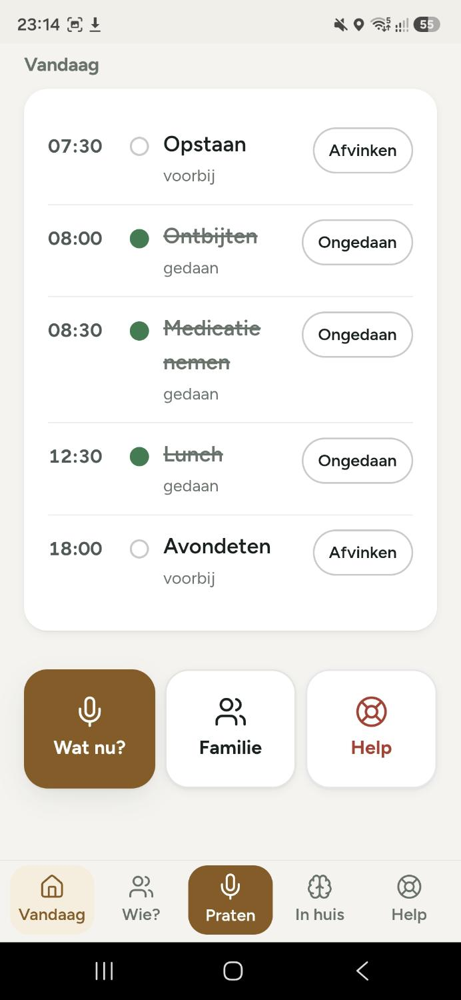
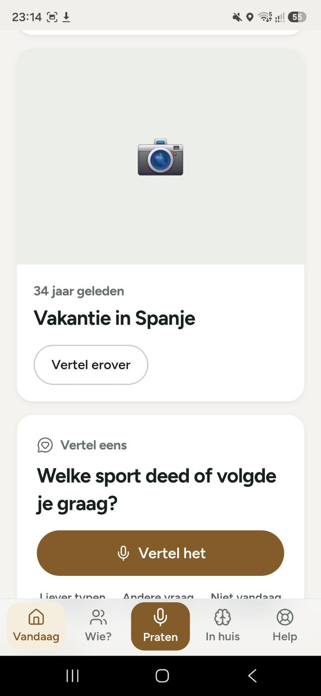
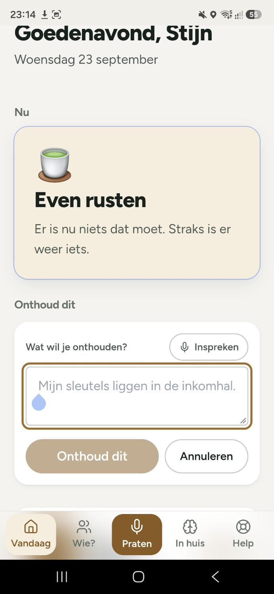
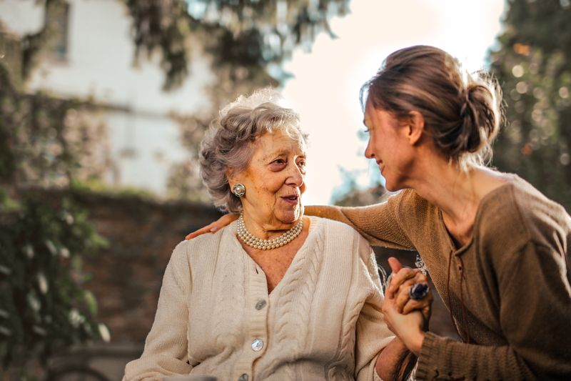

Uw dag in één oogopslag
Taken zoals opstaan, ontbijt, medicatie en avondeten staan klaar. Eenvoudig afvinken of ongedaan maken. Nooit meer vergeten wat er moet gebeuren.
Lifeangle ondersteunt ouderen dagelijks met slimme herinneringen, een duidelijke dagstructuur en de mogelijkheid om waardevolle stemherinneringen vast te leggen voor later.
Lifeangle helpt ouderen hun dag zelfstandig te organiseren én zorgt dat kostbare herinneringen niet verloren gaan.
Een overzichtelijke dagplanning met herinneringen voor opstaan, medicatie, maaltijden en meer. Alles in duidelijke taal en grote knoppen.

Met één druk op de knop neemt u uw stem op. Verhalen, tips of belangrijke notities worden veilig bewaard in een persoonlijke tijdlijn.
Drie voorbeelden uit de app die laten zien hoe eenvoudig en behulpzaam Lifeangle is.

Taken zoals opstaan, ontbijt, medicatie en avondeten staan klaar. Eenvoudig afvinken of ongedaan maken. Nooit meer vergeten wat er moet gebeuren.

Oude foto’s en vragen nodigen uit om te vertellen. “Welke sport deed of volgde je graag?” – ideaal om verhalen levend te houden.

Sleutels in de inkomhal? Even inspreken of typen en Lifeangle bewaart het. Later snel terug te vinden wanneer u het nodig heeft.
Met Lifeangle neemt u eenvoudig uw stem op. Of het nu gaat om een verhaal over de vakantie in Spanje, een tip voor de kleinkinderen of een notitie over waar de medicijnen liggen – alles komt terecht in een persoonlijke tijdlijn.
Familieleden kunnen later meeluisteren. Zo blijven herinneringen levend en voelt niemand zich alleen. Zelfstandig blijven én verbonden blijven: dat is de kern van Lifeangle.
Begin met opnemenOuderen gebruiken Lifeangle dagelijks op hun tablet of telefoon. Eenvoudig, rustig en betrouwbaar.


Download Lifeangle en ontdek hoe eenvoudig het is om herinneringen vast te leggen, uw dag te organiseren en verbonden te blijven met familie.
Download de appBeschikbaar voor Android en iOS · Gratis te proberen